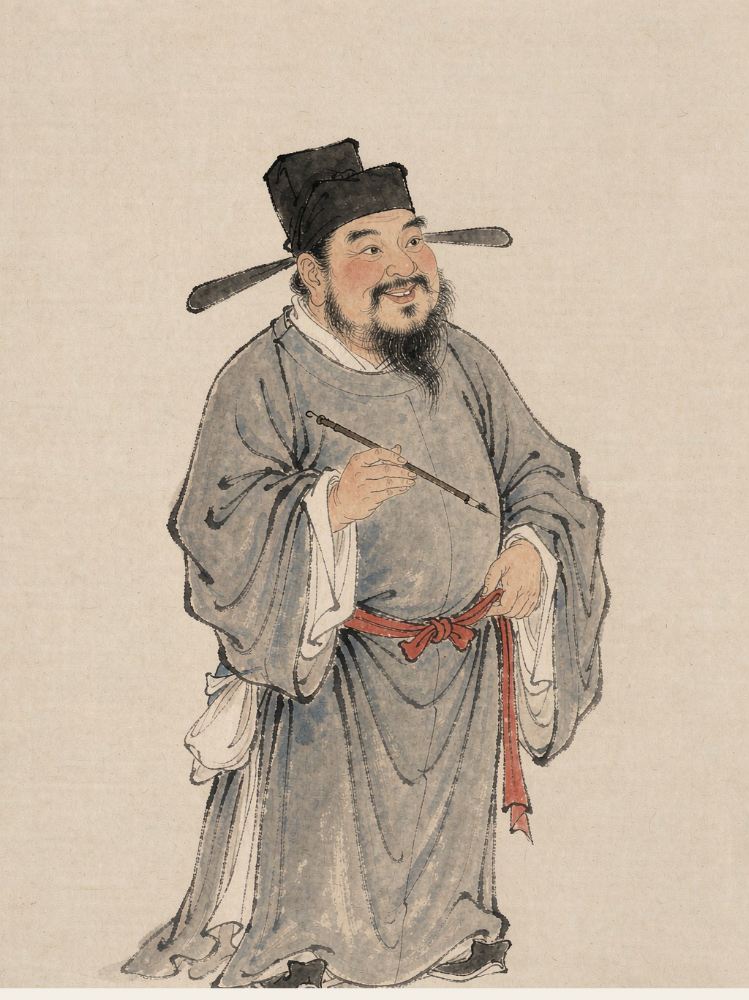

苏轼
宋代词人
字子瞻，号东坡居士，北宋文学家、书画家。“豪放派”词风代表，词开一代新风，亦擅婉约，诗文书画俱臻一流。
水调歌头·明月几时有
明月几时有？把酒问青天。 不知天上宫阙，今夕是何年。 我欲乘风归去，又恐琼楼玉宇，高处不胜寒。 起舞弄清影，何似在人间。 转朱阁，低绮户，照无眠。 不应有恨，何事长向别时圆？ 人有悲欢离合，月有阴晴圆缺，此事古难全。 但愿人长久，千里共婵娟。
阅读全文 →念奴娇·赤壁怀古
大江东去，浪淘尽，千古风流人物。 故垒西边，人道是，三国周郎赤壁。 乱石穿空，惊涛拍岸，卷起千堆雪。 江山如画，一时多少豪杰。 遥想公瑾当年，小乔初嫁了，雄姿英发。 羽扇纶巾，谈笑间，樯橹灰飞烟灭。 故国神游，多情应笑我，早生华发。 人生如梦，一尊还酹江月。
阅读全文 →江城子·乙卯正月二十日夜记梦
十年生死两茫茫，不思量，自难忘。 千里孤坟，无处话凄凉。 纵使相逢应不识，尘满面，鬓如霜。 夜来幽梦忽还乡，小窗梳妆，相顾无言，惟有泪千行。 料得年年肠断处，明月夜，短松冈。
阅读全文 →